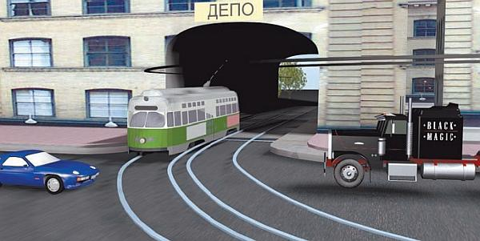

Умение «читать» дорогу как элемент водительского мастерства.
Сущность такого понятия, как «безопасность дорожного движения», заключается в том, что каждый участник дорожного движения должен не только наблюдать за дорогой и видеть все, на ней происходящее, но и сам быть заметен для других. Тем не менее сплошь и рядом возникают прямо противоположные ситуации.
Одной из главных причин такого положения вещей является то, что в наше время процесс управления автомобилем требует от водителя восприятия огромного количества информации за относительно короткие промежутки времени. В результате это нередко приводит к так называемой информационной перегрузке: человек не в состоянии усвоить важную информацию, а следовательно, принимает и реализует ошибочные решения, что, в свою очередь, становится причиной серьезных дорожно-транспортных происшествий.
Однако главной причиной аварий является все же не интенсивность дорожного движения, а проблемы со зрением и восприятием необходимой информации. Как показывают результаты многочисленных исследований, многих дорожно-транспортных происшествий могло не быть, если бы водитель адекватно оценивал свои зрительные возможности и рационально их использовал. Одним из основных условий для этого является такое управление транспортным средством, при котором водитель не попадает в ситуации, требующие чуть ли не сверхъестественных способностей для восприятия и обработки информации.
Иначе говоря, для безопасной езды водитель должен уметь наблюдать за дорогой и грамотно использовать свои зрительные способности. Это и называется умением «читать» дорогу.
ПРИМЕЧАНИЕ
Почти все водители уверены в том, что они умеют хорошо «читать» дорогу, но в реальности к большинству из них это не относится.
Умение «читать» дорогу позволяет не только своевременно обнаружить опасность, но и избежать ее с минимальными потерями (рис. 6.1). При этом у водителя будет достаточно пространства и времени для выполнения необходимых маневров.

Рис. 6.1. Опасная ситуация: водители машин поздно замечают трамвай, выезжающий из арки
Характерной особенностью человеческого зрения является неспособность человека с одного взгляда оценить ситуацию на дороге: для получения более или менее ясной картины происходящего он должен сосредоточиться на самых существенных с точки зрения безопасности движения элементах. Среди них в первую очередь отметим:
> знаки дорожного движения;
> дорожную разметку;
> сигналы светофора (регулировщика);
> прочие технические средства организации дорожного движения;
> текущие дорожные условия;
> наличие на дороге других участников движения и их поведение.
Иначе говоря, водитель воспринимает информацию о дорожной обстановке в комплексе, получая ее сразу из нескольких источников и соответствующим образом обрабатывая и анализируя, причем делая это максимально быстро.
Конечно, ситуация на дороге в каждом случае разная, однако можно выделить некоторые общие принципы, на которых базируется процесс наблюдения за дорожной обстановкой. В первую очередь таковыми являются:
> концентрация внимания в районе центра пути движения транспортного средства;
> безошибочное выделение на дороге ключевых объектов в конкретный момент времени;
> грамотное чередование быстрых осмотров ситуации на дороге с более внимательным и продолжительным рассмотрением ключевых объектов;
> контролирование ситуации позади и по сторонам транспортного средства.
Не все водители хорошо понимают, что представляет собой центр пути движения автомобиля. Поясним на примере: предположим, что путь движения транспортного средства представляет собой полосу пространства на проезжей части, которая располагается перед автомобилем и по ширине равняется ему. Центр пути движения автомобиля – это условная точка, которая находится впереди на пути следования и в которой водитель предполагает оказаться в определенный момент времени. Иными словами, центр пути движения автомобиля представляет собой постоянно перемещающуюся вперед в соответствии со скоростью движения транспортного средства цель, которую необходимо достигнуть.
В процессе наблюдения за ситуацией на дороге водитель постоянно обращает внимание на различные объекты, препятствия, события, но каждый раз после очередной концентрации на чем-либо своего внимания он вновь должен сосредоточиться в области центра пути движения автомобиля. При движении по прямой ровной дороге центр пути движения будет находиться примерно посередине полосы движения. Если же дорога имеет закругление или поворот либо вы движетесь на подъем, то центр пути движения располагается там, где будет находиться ваш автомобиль после преодоления этого участка дороги.
Таким образом, можно сформулировать первое правило, необходимое для «чтения» дороги: водитель должен выбирать направление движения транспортного средства, постоянно наблюдая за центром пути движения.
Как показывают результаты проведенных исследований, центр пути движения является оптимальным ориентиром в большинстве случаев. Водители, которые привыкли ориентироваться по осевой линии либо по правому краю проезжей части, направляли свой автомобиль соответственно ближе к центру дороги либо ближе к ее обочине. И первый, и второй варианты являются далеко не лучшими с точки зрения безопасности дорожного движения.
Еще одно правило, которым должны руководствоваться водители, желающие научиться «читать» дорогу: водитель должен смотреть вперед на максимально возможное расстояние, это позволит ему своевременно обнаружить внезапно возникшую опасность.
Распространенная ошибка многих новичков – при движении смотреть либо на спидометр (без комментариев), либо на капот (то же самое), либо непосредственно перед капотом. Нетрудно догадаться, что при этом они практически ничего не видят впереди. Поэтому уже с первых уроков вождения необходимо заставлять себя смотреть как можно дальше вперед, а не «перед носом». В любом случае зона вашей видимости должна быть такой, чтобы при обнаружении опасности вы при всех текущих дорожных условиях и при такой же скорости движения смогли своевременно остановить автомобиль. Отсюда вытекает третье правило умения «читать» дорогу: водитель должен смотреть вперед на расстояние, которое как минимум превышает остановочный путь автомобиля. Это логично, ведь водитель должен не только обнаружить опасность, но и быстро определить, насколько она серьезна, принять безошибочное решение о своих дальнейших действиях и быстро его реализовать.
СОВЕТ
При движении по загородной трассе старайтесь включать в зону своей видимости как минимум расстояние, которое проходит ваша машина с текущей скоростью в течение 12 секунд.
На первых порах данная рекомендация может показаться неудобной. Не исключено также, что ее исполнение будет вызывать определенный дискомфорт. Однако уже после нескольких тренировок вы с удовлетворением почувствуете, что вам стало намного легче наблюдать за дорогой и контролировать дорожную обстановку, определять расстояние до объектов и препятствий. Отличительной чертой данного метода является то, что он позволяет получить более точную и достоверную информацию, чем банальное измерение расстояния в метрах. Почему? Потому, что в последнем случае придется принимать во внимание еще и скорость, которая постоянно изменяется.
Научиться определять расстояние в секундах можно, используя следующее упражнение. Выберите какой-нибудь неподвижный объект, находящийся в зоне вашей видимости. (Это может быть, например, дерево, стоящий автомобиль, дорожный знак, ларек и т. д.) Сразу после этого начинайте про себя считать: одна тысяча один (проговаривая каждое слово), одна тысяча два, одна тысяча три и так далее до одна тысяча двенадцать. Каждый счет займет у вас одну секунду, следовательно, вы замеряете расстояние, которое проедет ваш автомобиль за 12 секунд. Если вы достигли намеченного объекта, не досчитав до 1012, значит, вам при выполнении следующего упражнения нужно найти более удаленный объект (при прочих равных условиях). В конечном итоге вы должны найти расстояние, которое ваша машина преодолевает за 12 секунд, и достигать объекта не ранее этого промежутка времени.
После такой тренировки вы будете замечать опасность, имея в запасе достаточно времени для того, чтобы ее избежать.
Возможно, у читателя возникнет вопрос: а почему именно 12 секунд, а не 10, 15 или 20?
Дело в том, что именно 12 секунд – тот интервал времени, который необходим водителю для обнаружения опасности, ее оценки и принятия верного решения до того, как опасность (объект, препятствие) окажется на расстоянии меньшем, чем тормозной путь автомобиля.
Для полной остановки в нормальных условиях (автомобиль технически исправен, дорога сухая и ровная и т. д.) транспортному средству, движущемуся со скоростью 60 километров в час, требуется не менее 3 секунд. В плохих условиях (дождь, недостаточная видимость и т. д.) для полной остановки может потребоваться в два раза больше времени. На более высокой скорости это время будет еще больше. Для примера предположим, что для полной остановки водителю требуется 4 секунды, отнимем это время из 12 секунд и получим 8 секунд. Но всегда нужно учитывать тот факт, что опасный объект может не стоять на месте, а двигаться навстречу вашему автомобилю. Если предположить, что скорость объекта примерно равна скорости вашего автомобиля, то время, отведенное вам на оценку дорожной обстановки и принятие решения, придется сократить вдвое, то есть остается 4 секунды. Именно столько времени опытные автомобилисты всегда стремятся иметь в запасе на случай возникновения непредвиденных обстоятельств.
Четвертое правило, которое должен соблюдать водитель при «чтении» дороги, можно сформулировать так: постоянно наблюдайте за ситуацией не только на проезжей части, но и на прилегающей к дороге территории.
Главная цель такого наблюдения – своевременное обнаружение реальных и потенциальных опасностей. Ведь не секрет, что нередко причины дорожно-транспортных происшествий кроются как раз за пределами проезжей части. В населенном пункте это может быть, например, пешеход, собирающийся перейти дорогу, или выезжающий со двора автомобиль, за пределами населенного пункта – дикое животное и т. д.
Одним из важнейших правил для «чтения» дороги является следующее: никогда не держите слишком долго свой взгляд на каком-то одном объекте. Между прочим, не только новички, но и многие опытные водители совершают одну и ту же ошибку: они подолгу рассматривают тот или иной объект на дороге, отвлекаясь при этом от всего остального. Один привык рассматривать государственные регистрационные номерные знаки других транспортных средств, другой – водителей и пассажиров соседних автомобилей, третий – пешеходов, четвертый – рекламные плакаты над проезжей частью и т. д. Это является очень опасной привычкой, так как, засмотревшись на рекламный плакат, вы рискуете не заметить опасности, возникшей прямо перед вашим автомобилем.
А ведь даже простой перевод взгляда с одного объекта на другой требует определенного времени, не говоря о том, что водитель должен успеть среагировать на изменение дорожной обстановки. Например, чтобы перевести взгляд с крайнего левого в крайнее правое положение (с последующей фиксацией), человеку необходимо не менее одной секунды. Автомобиль, который едет со скоростью 60 километров в час, за одну секунду успевает проехать 17 метров. Поэтому, рассматривая на дороге что попало, вы имеете все шансы пропустить более важные дорожные события.
Много дорожно-транспортных происшествий случается из-за того, что водитель не заметил автомобиль, приближающийся к нему сзади. Как правило, подобные аварии происходят при перестроении. Причина их – неумение пользоваться зеркалами заднего вида и контролировать ситуацию позади автомобиля.
К сожалению, не все водители помнят о том, что полностью доверять зеркалам заднего вида нельзя. Эти зеркала позволяют лишь в общих чертах контролировать обстановку сзади и по бокам автомобиля, но ни в коей мере не предоставляют водителю полную информацию о происходящем вокруг и в непосредственной близости от его машины.
Представьте, что сзади движется автомобиль, который решил обогнать вас по соседней полосе справа или слева. Вы его прекрасно видите в зеркало заднего вида, которое находится на лобовом стекле, а после перестроения автомобиль становится виден в соответствующее боковое зеркало. Однако по мере приближения к вашей машине этот автомобиль пропадает из зоны видимости зеркала заднего вида и переходит в поле вашего бокового зрения. Но это происходит не сразу: вначале автомобиль «теряется» из зеркала заднего вида, затем какое-то время он не виден ни в зеркало, ни боковым зрением, и только после этого попадает в поле вашего бокового зрения. То расстояние, в котором автомобиль становится «невидимым», называется мертвой зоной.
Поэтому отслеживать обстановку вокруг машины необходимо не только с помощью зеркал заднего вида, но и поворачивая голову. Только таким образом вы будете видеть все, что происходит вокруг.
Оценивая обстановку позади автомобиля, необходимо в первую очередь проверять следующее:
> не мала ли дистанция до транспортного средства, которое следует за вами;
> нет ли позади вашего автомобиля транспортных средств, которые приближаются к нему на большой скорости;
> насколько оживленным является движение позади вашего автомобиля;
> нет ли позади и по бокам транспортных средств, которые начинают выполнять обгон вашего автомобиля.
Однако не стоит слишком долго без перерыва смотреть в зеркала заднего вида, чтобы не перестать контролировать обстановку спереди. Это правило приобретает особую актуальность в том случае, когда впереди движется другой автомобиль, так как он в любой момент может затормозить и вы, если будете слишком долго изучать зеркала, не успеете отреагировать. Если вы ударите находящийся перед вами автомобиль, то вся ответственность за совершение данного дорожно-транспортного происшествия будет возложена на вас по принципу «всегда виноват задний». Следовательно, смотреть в зеркало заднего вида нужно быстро.
На основании вышеизложенного формулируем следующее правило «чтения» дороги: водитель должен постоянно контролироватьситуацию позади и по сторонам своего автомобиля. Следом – еще одно правило: перед выполнением любого маневра (смена полосы движения, поворот и др.) водитель должен удостовериться в том, что место, которое он предполагает занять на проезжей части, свободно и он никому не помешает.
Следует учитывать, что при увеличении скорости движения сокращается зона видимости водителя. Поэтому при движении на высокой скорости взгляд должен быть более подвижным, это позволит без особых проблем «читать» дорогу и своевременно реагировать на изменения дорожной обстановки.